|
|
| hard corals text index | photo index |
| Phylum Cnidaria > Class Anthozoa > Subclass Zoantharia/Hexacorallia > Order Scleractinia > Family Merulinidae |
| Carnation
corals Pectinia sp.* Family Merulinidae updated Nov 2019 Where seen? These delicate hard corals with fluted skeletons that resembles carnation flowers are seen on our Southern shores. Features: Colonies 10-20cm, forming frilly shapes, globular or flatter. Walls thin tall fragile that form a maze-like pattern with deep valleys. The surface has delicate fluted patterns but these are usually hidden under a smooth layer of thick tissue. At night, the polyps may extend long, thin translucent tentacles surrounding the corallite centres, which may occur anywhere. Colony colours seen include brown, yellow, orange, green, blue, purple, often with a sheen of contrasting colours. |
|
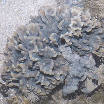 Sisters Island, Oct 11 |
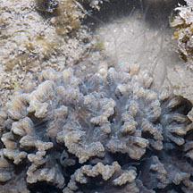 With long tentacles extended. |
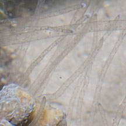 |
|
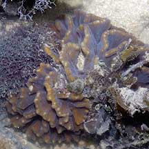 Pulau Hantu, Aug 04 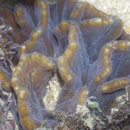 |
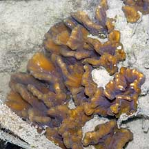 Pulau Hantu, Aug 04 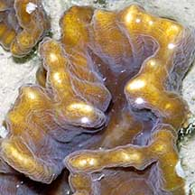 |
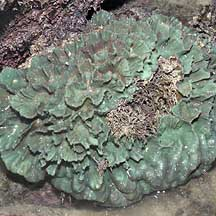 Raffles Lighthouse, Jul 06 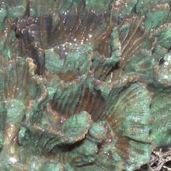 |
|
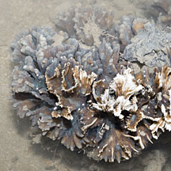 Sister Island, Jan 12 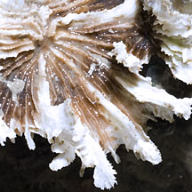 |
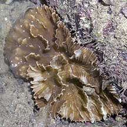 Raffles Lighthouse, Jul 06 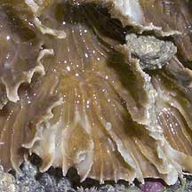 |
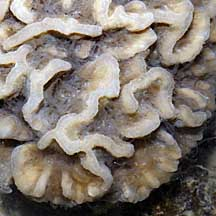 Sisters Island, Jul 10 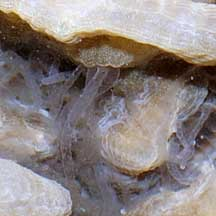 With long tentacles extended. |
*Species are difficult to positively identify without close examination.
On this website, they are grouped by external features for convenience of display.
| Carnation corals on Singapore shores |
On wildsingapore
flickr
|
| Other sightings on Singapore shores |
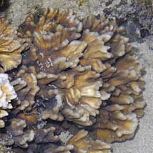 Pulau Berkas, May 10 |
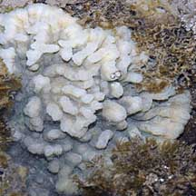 Pulau Berkas, May 10 |
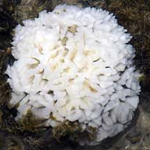 Bleaching. Pulau Berkas, May 10 |
| Pectinia
species recorded for Singapore from Danwei Huang, Karenne P. P. Tun, L. M Chou and Peter A. Todd. 30 Dec 2009. An inventory of zooxanthellate sclerectinian corals in Singapore including 33 new records **the species found on many shores in Danwei's paper. in red are those listed as threatened on the IUCN global list.
|
|
Links
References
|